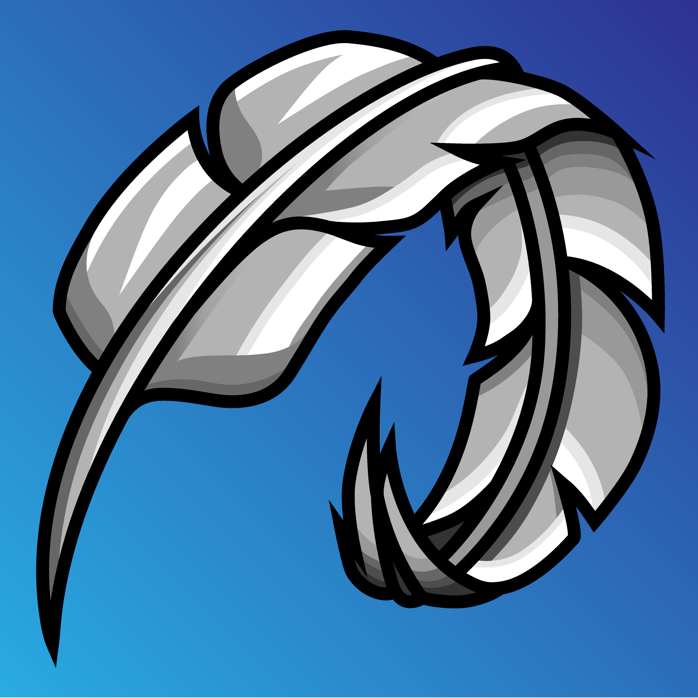
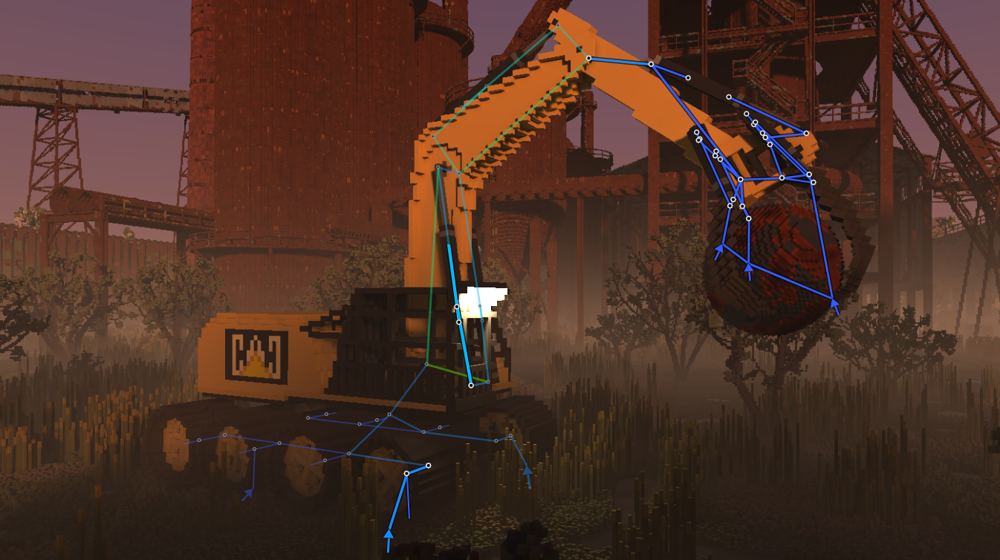
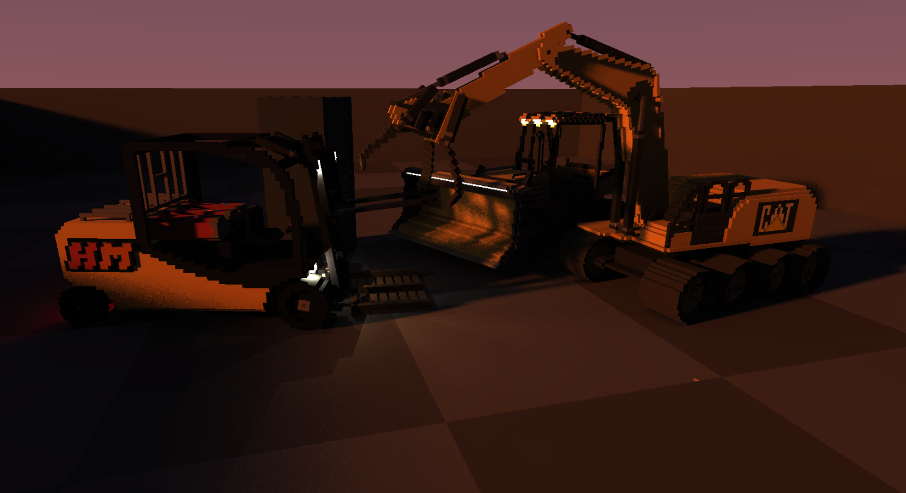
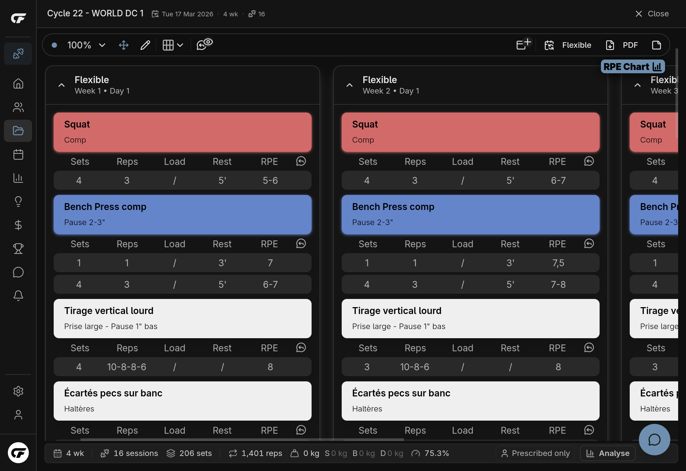
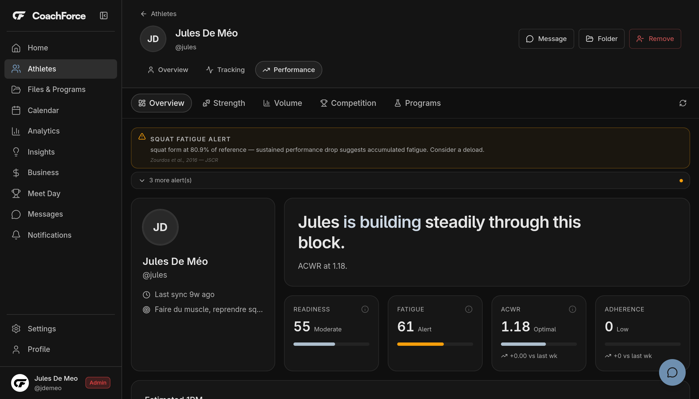

Jules De Meo
I write C++ that makes heavy machines move: an open-source physics library for articulated machines under load, and a fully raytraced voxel engine to run them in. I also built and run a SaaS platform on my own, from the database to billing to sales. On the side, I design analog circuits.
Completed the 42 Perpignan curriculum. Based in the Czech Republic. English and French, learning Czech.

Heavy Feather
⸻ open source, MIT
open source, MIT
Machines working under load, captured in real time, with forces drawn live.

Forces debug view, large loads on the arm.
The physics of Heavy Metal, extracted into a standalone open-source library. It simulates things built from parts that push hard on each other: linkages, hydraulic arms, cranes, presses, drivetrains. I found no open-source engine that could do that, and fast, so I wrote one.
Each machine is solved as one Featherstone articulation, in reduced coordinates: a part's pose comes from its parent's instead of being pulled back toward it, so joints hold exactly under load and every part keeps its real mass, however lopsided the masses get. What the tree can't express, closed loops, motors, limits and springs, is solved directly for the whole machine at once.
Pistons and servos behave like hydraulics: rigid once the valve shuts, stopped where they are when the lever is released. Contacts are solved through the machine, so a wheel on the ground feels the mass of everything attached to it, and cams and gears are solved exactly with their machine. Ropes run over pulleys and wind onto spools. Heavy Metal draws the forces live on the machine.
C++20 and no dependencies. Steps are deterministic, bit for bit, and allocate nothing once warm. Every change to main is built and tested on GCC, Clang and MSVC, one build under AddressSanitizer.
190
tests, most of them physics an engineer could predict on paper
3
compilers in CI, plus a package check that builds a host against the installed library
0
dependencies, and no allocation once a step is warm
Heavy Metal
⸻•


Simulated machines, fully editable by the player.
Raytraced voxel scene, physics and indirect lighting, in real time.
A fully raytraced voxel engine in C++20 and Vulkan. There is no rasterization anywhere in the frame, including primary visibility, and global illumination is computed from real geometry, dynamically, from an octree of radiance probes placed according to the camera and the scene.
The constraint that shapes everything: minimal temporal accumulation. Scenes are built to change constantly, and leaning on accumulation and denoising would leave visible trails behind every moving part. The frame budget has to be met by making the work genuinely cheap, which rules out the standard approach and forced me to design techniques specifically for this engine.
Scenes are fully dynamic and destructible at 5 cm resolution, with machine physics from Heavy Feather. The engine targets midrange hardware.
Heavy Metal is the game the engine exists for: a sandbox in the spirit of Teardown, where players assemble heavy machinery from voxel parts, drive it with simulated hydraulic cylinders and pumps, and use it to solve levels.
CoachForce
⸻ •
•

Program builder interface.

Athlete tracking and load history.
A multi-tenant platform where strength coaches write training programs, track their athletes' progress and bill their clients, on the web and in a mobile app. Architecture, code, design and the commercial side: all mine. It is deployed and in production.
The interesting part is the analytics layer: estimated 1RM, RPE-based load prescription, tonnage and acute-to-chronic workload ratio, computed across an athlete's whole history. I compete in powerlifting at national level, so I knew what the numbers needed to mean before I wrote them. They show coaches trends they would never spot in a spreadsheet.
Billing runs on Stripe Connect with direct charges, so each coach stays the merchant of record. That meant handling connected-account onboarding and the KYC flow, the part nobody tells you about.
Storage is split by access pattern: AWS S3 for data that changes often (programs, analytics data, documents), Cloudflare R2 for media that rarely changes but is read constantly (images, video, audio), which keeps both latency and bandwidth costs down.
Guitar pedals
⸻ ngspice • LTspice • CircuiTikzOriginal guitar effect circuits, designed from the schematic up. The latest, the Snake, combines a TL072 overdrive with a RAT-style distortion, JFET buffers and a state-variable filter crossover between the two.
Every circuit is simulated in ngspice or LTspice, drawn in CircuiTikz, built on veroboard and debugged on the bench with an oscilloscope. I have also built an electric guitar, and amplifiers from salvaged chassis. The habit carries straight over to software: model it, build it, then measure it.
The parts that were actually hard
⹃ Rendering
I rebuilt the engine's traversal several times: octrees, BVHs, hardware ray tracing. Each switch was made on measured evidence, with reproducible tests, and I kept every superseded version instead of deleting it. A structurally different implementation that renders an identical image is the only reliable way to catch bugs that depend on tree shape. It caught several, and I fixed them.
⹃ Physics
Physics was the hardest part of the whole project, and it took two formulations. My first solver was the standard game-engine one: maximal coordinates, sequential impulses. It broke on exactly what the game is about. A closed loop of joints under heavy load is over-constrained, the solver builds up a force that pushes on nothing, and it grows every sub-step until the mechanism explodes. I patched it twice, then stopped patching and changed formulation. After building basic 2D and 3D engines, I wrote a first, unoptimised Featherstone implementation to understand it from the inside, prototyped the machine solver inside Heavy Metal, and once it held up, turned it into Heavy Feather.
Reduced coordinates make the tree exact, and move the difficulty to everything a tree can't express. On a machine that is the rule, not the exception: a hydraulic cylinder between a chassis and a boom closes a loop, so every hydraulic arm is a four-bar. Each loop is cut at one joint, and the cut is held by constraint rows solved together with the machine's dynamics, directly, by block principal pivoting, rather than swept until they roughly agree. Limits, drives and springs live in the same solve. Small machines go through a dense factorisation of their mass matrix, large ones through the articulated-body recursion, in time linear in their size.
The other half of the work was making it trustworthy. Steps are deterministic, bit for bit. A NaN born in one island can't leak out of it: the world rolls that island back to where the step found it and tells the host. And the tests mostly check physics an engineer would predict: a brake holds its wheel until the torque passes μ times its clamp, a cart whose wheels spin pulls away at μg, a cam's valve floats at the speed its spring predicts.
What it taught me: when a fix keeps needing another fix, the problem is the formulation, not the code. And a physics test is only worth something if it checks a number you could have worked out on paper.
⹃ CoachForce
On CoachForce, the hard part was not technical. Building alone for months means every decision about what ships, what waits and what gets cut is yours, with nobody to check it against. I learned to make those calls by working out what each choice costs, then by talking to around fifty coaches and steering the roadmap by their real needs rather than by what I felt like building.